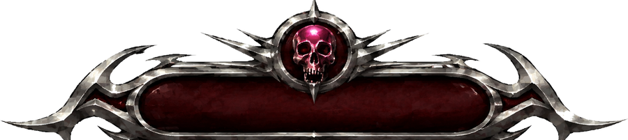

КЕШАУТ (HUB_1): подними кешбокс в центре арены → отнеси на свою станцию → защищай депозит 45 секунд. Удержал — деньги твои. Победа: 3000$ или лучший счёт за 8 минут.
ДУЭЛЬ — ты против ИИ-чемпиона, FFA-3 — каждый сам за себя, депозит идёт быстрее.
Кешбокс можно бросать (физика) — кидай к станции или вырывай из чужих рук. В руках с кешом ты светишься для всех.
Музыка — это не фон, а твой бафф-двигатель. Игра слушает трек вживую: бит, энергию и дропы.
· FLOW-метр растёт от киллов и действий в бит: даёт скорость, урон и реген ХП. Молчишь — FLOW тает.
· Ритм-судья: выстрел, дэш или перезарядка ровно на бите = бонусы (дэш дальше, спред уже). Килл на бите — ×2 FLOW.
· DROP: когда трек срывается в дроп — мир датамош-искажается, а твой урон ×2. Это твой момент пушить.
· BREAKDOWN: тихая часть трека — слоу-мо «вдох»: время тянется, перезарядись и займи позицию.
· ZE FLOW: стрик 8+ идеальных попаданий в бит — максимальная форма: след, свечение, пиковые баффы.
· Чем энергичнее трек, тем чаще дропы. Загрузи свой трек в меню МУЗЫКА — игра разберёт его сама.
WASD — движение · ЛКМ — огонь · ПКМ — ADS · SHIFT — спринт · CTRL — присед / слайд на бегу
SPACE — прыжок (×2 — двойной) · Q — дэш · E — ударная волна · F — крюк · G — граната · R — перезарядка
На таче: левый стик — движение, свайп — камера, кнопки на экране. Стрелять и вертеть камерой можно одновременно. Гироскоп — в настройках (нужен HTTPS).
· Ствол выдаётся случайно на каждом респавне — патроны бесконечны, но есть перезарядка.
· Джамп-пады (красные шевроны) швыряют вверх — мега-пады закидывают на крыши. Падение за арену = смерть.
· Здания разрушаемы: крыша без опор падает, обломки ранят.
· По арене летают черепа-змеи — полупрозрачные призраки-охотники. Бьют любого, но хрупкие: разбей змею — она вернётся через ~10 сек в другом месте. Сквозь стены не пройдут.